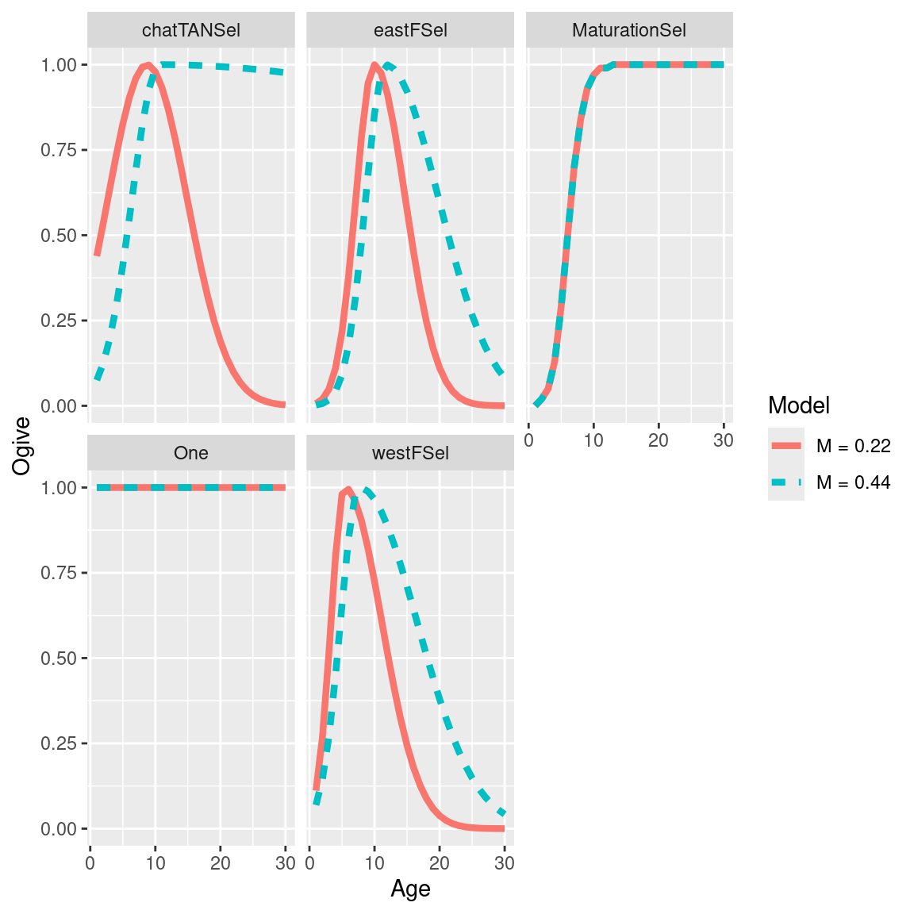

Chapter 5 Comparing multiple MPD runs
5.1 Read in models
file_name_low_m = system.file("extdata", "SimpleTestModel" ,"LowM.log",
package = "r4Casal2", mustWork = TRUE)
low_m_mpd = extract.mpd(file = file_name_low_m)
file_name_high_m = system.file("extdata", "SimpleTestModel", "highM.log",
package = "r4Casal2", mustWork = TRUE)
high_m_mpd = extract.mpd(file = file_name_high_m)
## create a named list
models = list("M = 0.22" = low_m_mpd, "M = 0.44" = high_m_mpd)5.2 Compare model outputs
5.2.1 selectivities
selectivity_df = get_selectivities(models)
ggplot(selectivity_df, aes(x = bin, y = selectivity, col = model_label, linetype = model_label)) +
geom_line(size = 1.5) +
facet_wrap(~selectivity_label) +
labs(x = "Age", y = "Ogive", col = "Model", linetype = "Model")
5.2.2 Derived quantities
dq_df = get_dqs(models)
dq_df$years = as.numeric(dq_df$years)
ggplot(dq_df, aes(x = years, y = values, col = model_label, linetype = model_label)) +
geom_line(size = 1.5) +
facet_wrap(~dq_label) +
labs(x = "Year", y = "SSB", col = "Model", linetype = "Model")5.2.3 Recruitment
recruit_df = get_BH_recruitment(models)
ggplot(recruit_df, aes(x = model_year, y = standardised_recruitment_multipliers, col = model_label, linetype = model_label)) +
geom_line(size = 1.3) +
labs(x = "Recruited year", y = "standardised recruitment multipliers", col = "Model", linetype = "Model")5.2.4 Abundance fits
abundance_obs_df = get_abundance_observations(models)
ggplot(abundance_obs_df, aes(x = year)) +
geom_point(aes(y = observed), size = 1.4) +
geom_line(aes(y = expected, col = model_label)) +
labs(x = "year", y = "Abundance", col = "Model", linetype = "Model") +
facet_wrap(~observation_label, scales = "free")5.2.5 Compare objective function
cas2_obj = get_objective_function(models)
compar_obj = cas2_obj %>% pivot_wider(values_from = negative_loglik, names_from = model_label, id_cols = component, values_fill = NA)
head(compar_obj, n = 10)## # A tibble: 10 × 3
## component `M = 0.22` `M = 0.44`
## <chr> <dbl> <dbl>
## 1 observation-chatTANbiomass -20.2 -19.7
## 2 observation-chatTANage 339. 346.
## 3 observation-chatOBSwst 227. 227.
## 4 observation-chatOBSest 127. 127.
## 5 penalty-CatchMustBeTaken1 0 0
## 6 prior-B0 11.2 11.2
## 7 prior-chatTANq -2.32 -1.80
## 8 prior-TANSel_mu 0.256 3.50
## 9 prior-TANSel_sig_l 0.0000171 0.0000502
## 10 prior-TANSel_sig_r 0.0000148 0.0177## rescale objective score so the model with the best fit (lowest score)
## will have zero for a given component and others will have be reference from that
obj_df = cas2_obj %>% group_by(component) %>%
mutate(rescaled_obj = negative_loglik - min(negative_loglik, na.rm = T))
## plot it for each component
ggplot(obj_df, aes(x = rescaled_obj, y = component, col = model_label, shape = model_label)) +
geom_point(size = 2) +
labs(x = "Objective function - min (objective function)", y = "") +
geom_vline(xintercept = 0, col = "gray", linetype = "dashed", size = 1) +
theme(legend.position = "bottom",
axis.text = element_text(size = 12),
axis.title = element_text(size = 12),
strip.text = element_text(size=16),
title=element_blank(),
legend.text = element_text(size=14))